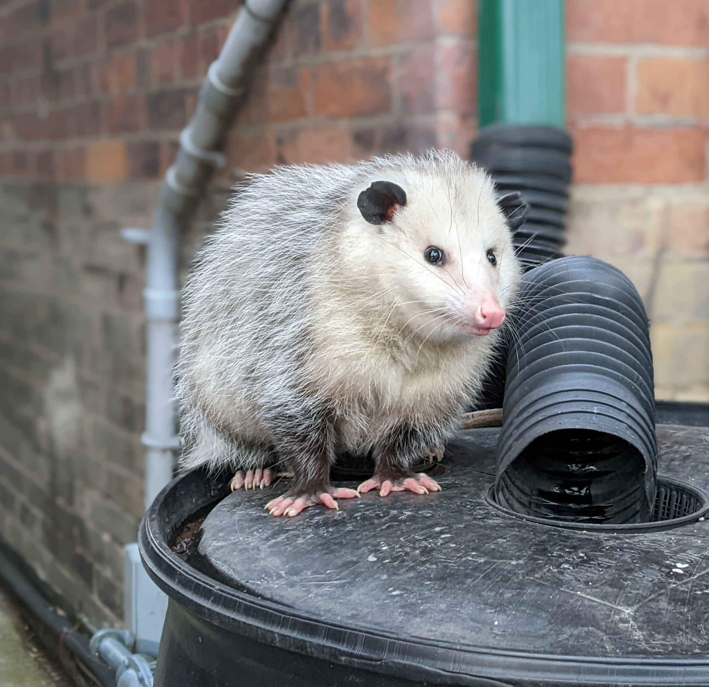

Welcome!
Hi there!! My name is Beauregard, but my friends call me Bo. I'm a mother opossum living in Toronto, and I love exploring the city with my family. Opossums may be rare in Toronto, but we're a hardy bunch!
My Hobbies
- Foraging for food in the city
- Snuggling with my babies
- Playing dead to avoid predators (just kidding!)
Blog
Welcome, fellow food adventurers, to my little corner of the world where I, Bo the opossum, share my passion for dumpster dining! As a proud, resourceful opossum living in the bustling city of Toronto, I've discovered that discarded food can be an eco-friendly, delightful, and diverse source of nourishment. Join me on my urban foraging adventures as I explore the hidden gems in trash bins, uncovering an endless buffet of flavors and textures. Here, I'll be sharing my culinary discoveries and tips on how to thrive in this human world. So, get ready for a wild ride through the world of refined scavenging and prepare to view trash in a whole new light!
Latest Posts
Meet the Kids
I love my little ones to bits, even when they keep me up all night with their antics. We like to spend our time exploring the city and trying out new foods. I'm so proud of each and every one of them!Bingo
The eldest of my brood, Bingo is a natural leader with a love for berries and a talent for climbing. He aspires to be a wildlife biologist when he grows up.
Bongo
Bongo is the middle child, and often the most mischievous. He loves snacking on insects and playing hide and seek with his siblings. His life aspiration is to be an acrobat in the circus.
Bojangles
Bojangles is the most curious. She enjoys exploring new places and trying new foods, and has a special fondness for sweet potatoes. She dreams of being a travel writer when she grows up.
Bogart
Bogart is the shy one of the group, but has a big heart. He loves nothing more than cuddling with his siblings and snacking on mushrooms. He aspires to be a poet when he grows up.
Bolé
The youngest of the litter, Bolé is full of energy and loves to play. Her favourite food is bananas, and her favourite activity is wrestling with her siblings. She aspires to be a professional wrestler when she grows up.
I'm so proud of my little ones and can't wait to see what they accomplish in life.